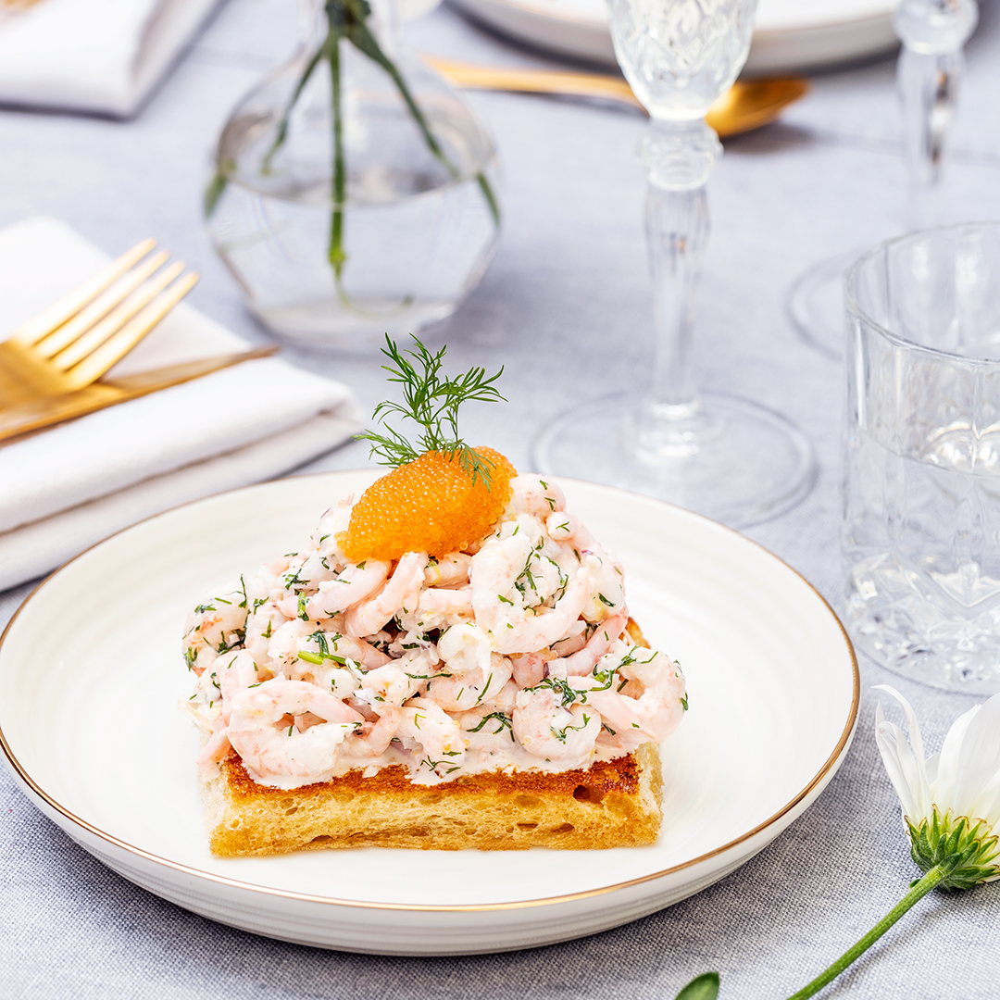

Recipe

Description
The most luxurious and exquisite toast you will ever have. A great first course for the evening that will leave you wanting more.
Ingredients
- Red onions
- Dill
- lemon
- bread
- Shrimps
- Mayonnaise
- Crème fraîche
Steps
- Chop the red onions, Dill and lemon. Add all but the lemon to a bowl and make it into a mix. Squeeze a lemon over the mix.
- Add the shrimps, Mayonnaise and Crème fraîche to the mix and mix it.
- Toast the bread in a frying pan
- Put it all together on a plate. Serve with some lemon slices and a dill branch